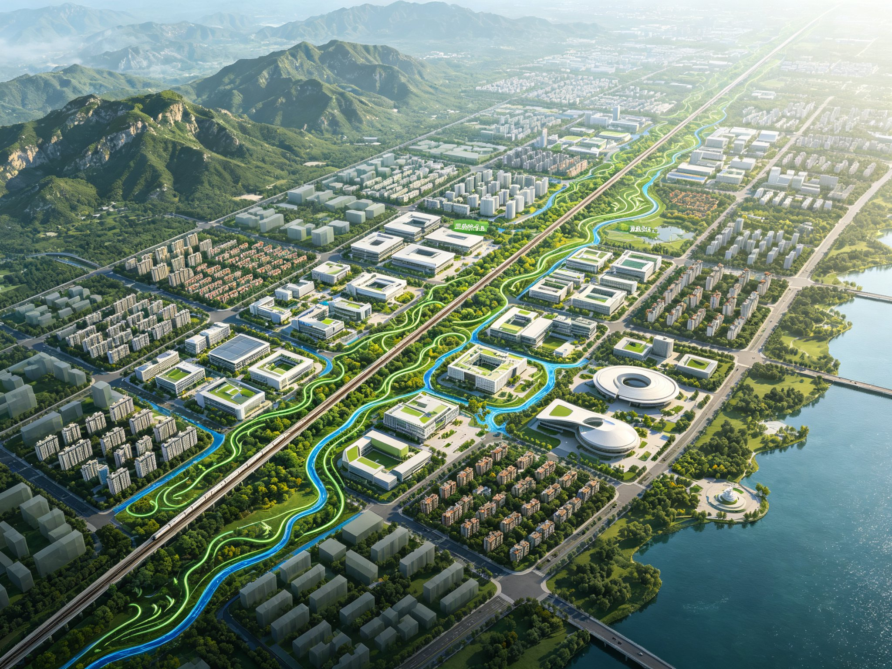
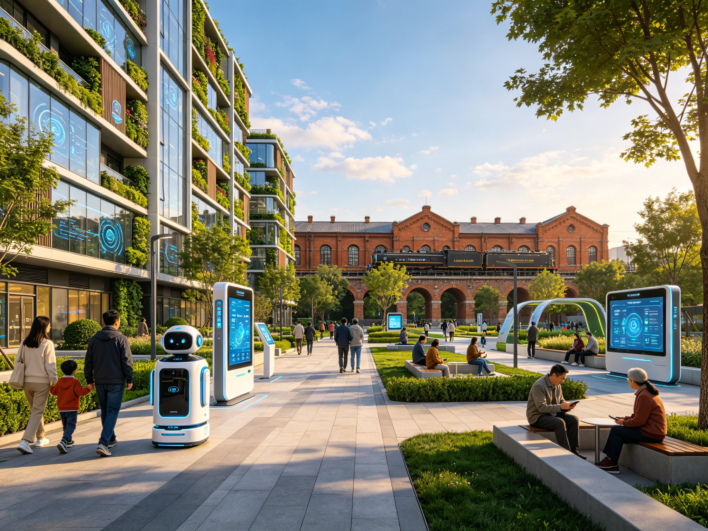
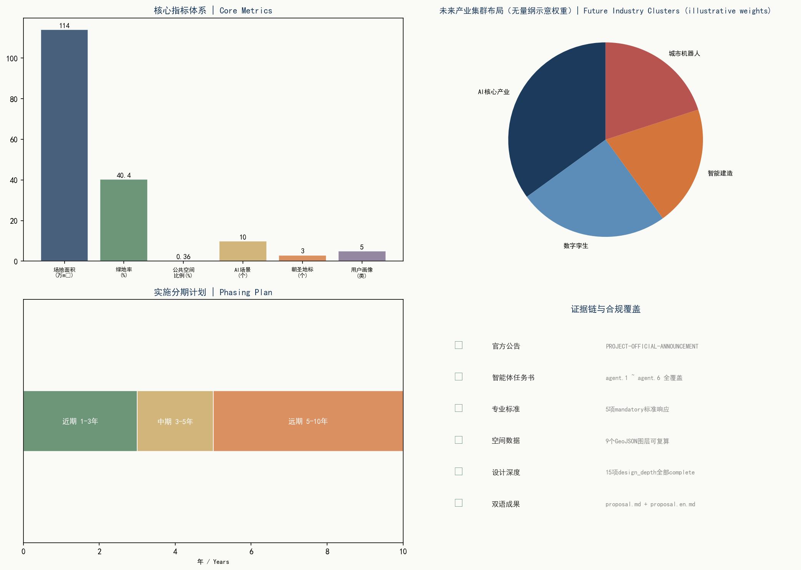

总览地图

总体设计范围总平面鸟瞰

智脊总平面渲染
以京张铁路遗址公园为文化智脊，串联众智园AI创新加速区、北京AI原点社区、大钟寺AI产业集聚区三处重点区域。
三层范围
- 统筹研究范围：约43.6 km²，面向区域产业与未来城市战略研究。
- 总体设计范围：约11.4 km²，控规衔接研究/概念性更新策略的城市设计。
- 重点区域：三处重点片区详细设计。
重点区域

三处重点区域空间结构
众智园AI创新加速区

北京AI原点社区
大钟寺AI产业集聚区
用地分区

用地结构与功能分区
用地分类采用国土空间用地用海分类代码，形成科创、产业、居住、公共服务与绿地的清晰分区结构。
交通慢行
构建轨道+公交+慢行一体化的绿色出行网络，街坊尺度宜步宜骑，重点区域之间以智脊绿道与林荫慢行道相连。
蓝绿公共空间

交通慢行与蓝绿系统
中华民族伟大复兴主题广场
詹天佑纪念广场
建筑
建筑高度体量风格色彩以京张智脊为统领，形成舒缓有致的天际线；重点区域植入AI研发中心、孵化器和人才公寓等建筑类型。
更新项目
- 智脊绿道与遗址公园贯通工程
- 众智园AI创新加速区更新
- 北京AI原点社区智慧化改造
- 大钟寺AI产业集聚区更新
- 主题广场与公共空间提升
AI 场景
- AI文化导览（ai-cultural-guide）
- AI交通与慢行（ai-traffic-walkability）
- 低速无人配送（robot-delivery-low-speed）
- 企业服务智能体（enterprise-service-copilot）
- AI健康服务导航（ai-health-service-navigation）
- 公共安全运行复盘（public-safety-operations-review）
核心指标
总体设计范围面积 11412825 m²
绿地率 0.403833
公共空间比例 0.00359

核心指标与证据链
任务覆盖
方案覆盖开源征集任务书的六项必做任务：现状研判、空间结构、用地与建筑规模、交通市政、蓝绿风貌、实施分期，并以AI场景卡与用户画像支撑落地。
自检状态
已通过自我检查：空间几何自洽、指标由几何复算、证据链完整、版权与合规声明齐备。结论均属概念性建议，须经专业程序复核。
来源
- 资格预审公告（PROJECT-OFFICIAL-ANNOUNCEMENT）
- 开源征集任务书（PROJECT-AGENT-OPEN-CALL-TASKBOOK）
- 住建部城市设计管理办法（MOHURD-URBAN-DESIGN-MEASURES）
- 国土空间用地用海分类指南（MNR-LAND-USE-CLASSIFICATION-GUIDE）
- 控规衔接研究相关规范（MOHURD-CONTROL-DETAILED-PLANNING）
假设
- 采用仓库provisional边界，官方精确边界发布后复算。
- 控规条件尚未完全公开，法定指标标记为待确认。
- 影像与部分底图为概念示意，不替代现状普查。
漫游影片
京张智脊复兴未来人居带漫游影片（社区展示用）